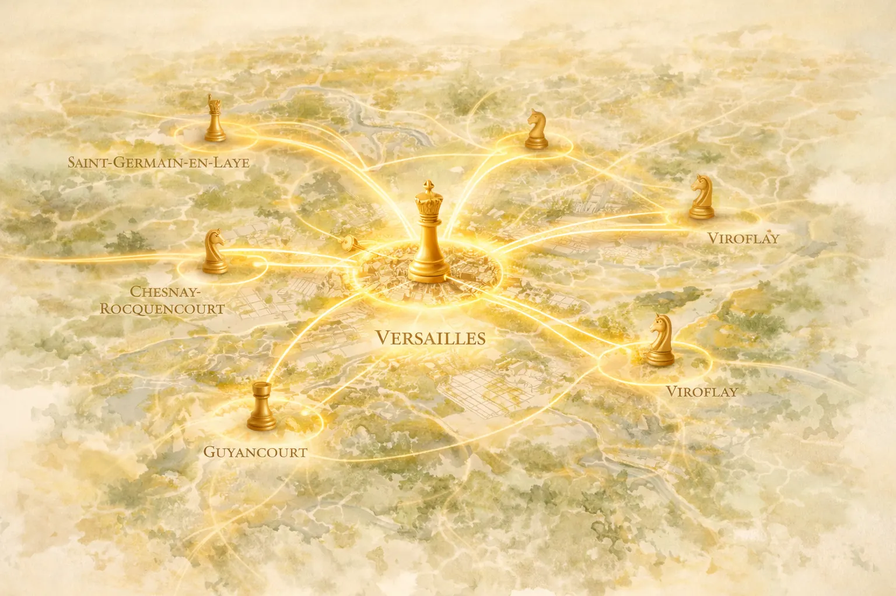
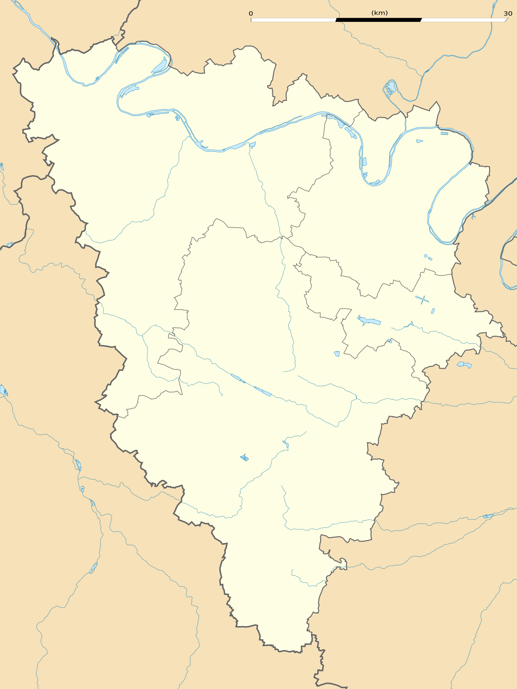

Au sommaire

Ma zone d'intervention autour de Versailles
Basé à Versailles, je me déplace à votre domicile dans toutes les villes limitrophes. Pas besoin de déposer votre enfant quelque part ni de chercher une place de parking en centre-ville. Je viens chez vous, avec tout le matériel, à l'heure qui vous arrange.
Les villes où j'interviens à domicile
Toutes ces villes sont à moins de 5 km de Versailles. J'y interviens tous les jours, matin et soir, avec un maximum de flexibilité sur les horaires.
Le Chesnay-Rocquencourt
Directement collé à Versailles, Le Chesnay est l'une des villes où j'ai le plus d'élèves. Quartiers résidentiels calmes, beaucoup de familles — l'endroit idéal pour un cours d'échecs à domicile dans un cadre serein. Si vous habitez côté Parly 2 ou côté Rocquencourt, je suis chez vous en 10 minutes.
Viroflay
Viroflay est une ville que j'apprécie particulièrement pour sa tranquillité. Bien desservie par le RER C et le Transilien, elle attire des familles qui recherchent un cadre de vie agréable. Plusieurs de mes élèves à Viroflay sont des enfants de 6 à 12 ans qui progressent remarquablement bien. Pour en savoir plus sur les bienfaits pour les plus jeunes, consultez notre article sur les 7 bienfaits des échecs pour les enfants.
Vélizy-Villacoublay
Ville dynamique avec son centre commercial et ses quartiers résidentiels, Vélizy accueille beaucoup de familles actives. J'y donne des cours en fin de journée et le week-end, souvent pour des enfants qui reviennent de l'école ou des adultes qui veulent décompresser après le travail.
Chaville
Entre la forêt de Meudon et Versailles, Chaville offre un cadre verdoyant. Ses habitants apprécient les activités intellectuelles — et les échecs y trouvent naturellement leur place. Cours disponibles en semaine et le week-end.
Jouy-en-Josas
Petite ville charmante au sud de Versailles, connue pour HEC Paris. Jouy-en-Josas attire des familles éduquées qui valorisent le développement intellectuel de leurs enfants. Un terrain idéal pour les échecs.
Buc
Village résidentiel paisible entre Versailles et Jouy-en-Josas. Peu de structures de loisirs sur place — raison de plus pour profiter d'un cours d'échecs directement chez vous, sans déplacement.
Bailly
Commune calme à l'ouest de Versailles, Bailly est un petit bijou résidentiel. J'y interviens régulièrement pour des familles qui cherchent une activité stimulante sans quitter leur quartier.
Saint-Cyr-l'École
Voisine directe de Versailles côté ouest, Saint-Cyr est une ville familiale avec de nombreuses écoles. Beaucoup de mes jeunes élèves y habitent, et la proximité rend les créneaux très faciles à organiser.
Vous habitez dans l'une de ces villes ?
Réservez votre premier cours gratuit. Je me déplace chez vous avec tout le matériel. Enfants et adultes, tous niveaux.
Réserver mon cours d'essai gratuitComment se passe un cours d'échecs à domicile
Le principe est simple : je viens chez vous, dans votre salon ou la chambre de votre enfant, avec tout le matériel nécessaire. Vous n'avez rien à préparer.
Ce que j'apporte
- Un échiquier professionnel avec pièces de tournoi
- Une pendule (pour les élèves qui se préparent aux compétitions)
- Des exercices imprimés adaptés au niveau de l'élève
- Un programme personnalisé avec les objectifs de la séance
Déroulement type d'une séance (1 heure)
- 5 min — Point sur la semaine : exercices faits, parties jouées, questions
- 15 min — Leçon du jour : tactique, ouverture, finale ou stratégie
- 10 min — Exercices pratiques sur le thème du jour
- 25 min — Partie commentée en temps réel (le cœur du cours)
- 5 min — Bilan et exercices pour la semaine
Entre les cours, je reste disponible 7j/7 pour répondre à vos questions, analyser vos parties sur chess.com ou lichess, et ajuster votre programme. Pour en savoir plus sur l'accompagnement complet, consultez notre page cours d'échecs à Versailles.
Tarifs des cours d'échecs à domicile
- Cours à domicile : 50€/h — Je me déplace chez vous avec tout le matériel
- Cours en visio : 40€/h — Idéal pour les villes plus éloignées ou les agendas chargés
- 1er cours : GRATUIT — Sans engagement, pour tester
Les cours sont disponibles pour enfants (dès 5 ans), adolescents et adultes, tous niveaux — du débutant complet au compétiteur confirmé.
Questions fréquentes
"Je suis dans une ville qui n'est pas listée. Vous pouvez quand même venir ?"
Probablement oui ! Cette liste couvre mes zones habituelles, mais je m'adapte. Contactez-moi avec votre adresse et on trouvera une solution — à domicile ou en visio.
"Y a-t-il des frais de déplacement supplémentaires ?"
Non. Le tarif est de 50€/h, déplacement inclus, quelle que soit la ville dans ma zone d'intervention. Pas de mauvaise surprise.
"Combien de cours par semaine faut-il ?"
Pour la plupart des élèves, un cours par semaine est le rythme idéal. Ça laisse le temps de pratiquer entre les séances. Pour les compétiteurs ou ceux qui veulent progresser plus vite, on peut passer à deux cours par semaine.
"Mon enfant n'a jamais joué. C'est grave ?"
Absolument pas — c'est même le cas de la majorité de mes élèves ! On commence par les bases et votre enfant jouera ses premières parties dès le 2e ou 3e cours. Pour les appréhensions des parents, notre article mon enfant perd toujours aux échecs rassure sur la gestion de la frustration.
"Et pour les adultes retraités ?"
J'ai de plus en plus d'élèves seniors qui découvrent les échecs à la retraite. C'est un excellent exercice cognitif et social. Découvrez notre article dédié : les échecs à la retraite, 8 bienfaits prouvés.
"Cours en semaine ou le week-end ?"
Les deux. Je suis disponible du lundi au samedi, matin et soir. On trouve toujours un créneau qui convient à votre emploi du temps.
Prêt à démarrer ?
Que vous soyez au Chesnay, à Viroflay, à Vélizy ou ailleurs autour de Versailles — je viens chez vous pour un premier cours gratuit. Appelez-moi ou envoyez un message !
06 09 36 56 91 | nicolas.musicki@gmail.com
Réserver mon cours gratuitArticle recommandé
Vous habitez Versailles même ? Découvrez la page dédiée :
Cours d'Échecs Versailles (78) | 1er Cours Offert Cours d'échecs à domicile à Versailles et dans les Yvelines →
Article rédigé par Nicolas Musicki, professeur d'échecs à Paris et Versailles
Retour à l'accueil |
Me contacter